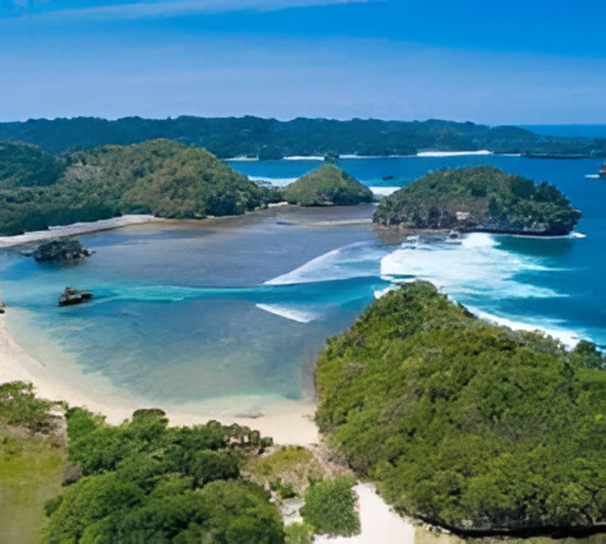
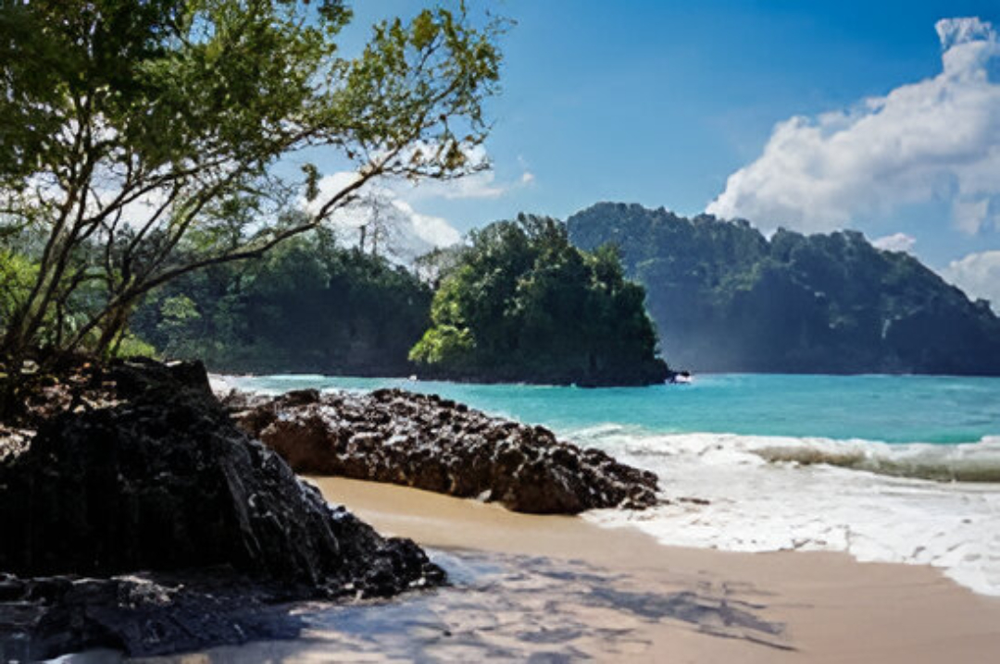
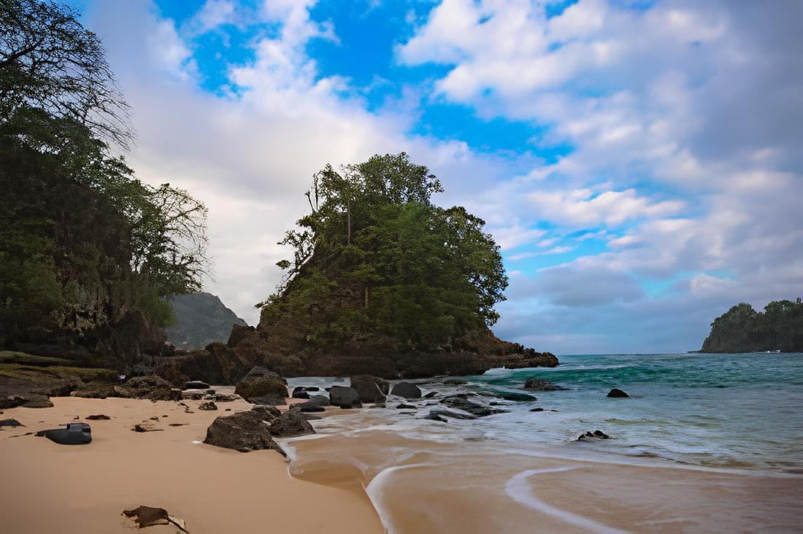
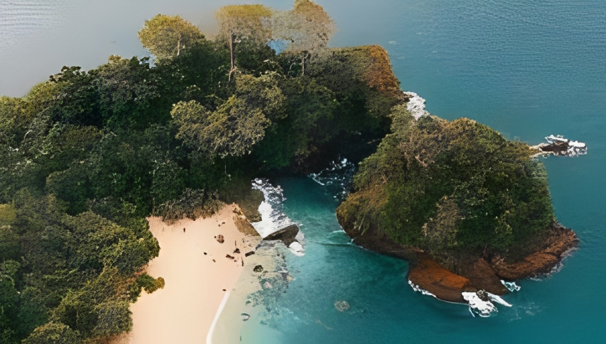
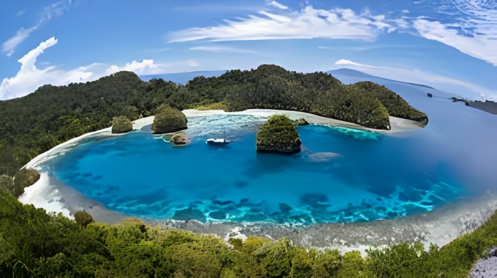
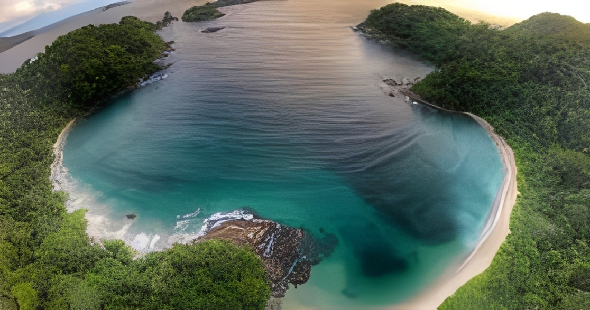

Teluk Ijo
Destinasi wisata pantai yang indah dengan air lautnya yang berwarna hijau zamrud yang jernih, pasir putih lembut, dan suasana alam yang masih sangat alami.
Galeri Foto






Informasi Detail
Teluk Ijo, atau juga dikenal sebagai Green Bay, adalah destinasi wisata pantai yang indah dan tersembunyi di Banyuwangi, Jawa Timur. Pantai ini terkenal dengan air lautnya yang berwarna hijau zamrud yang jernih, pasir putih lembut, dan suasana alam yang masih sangat alami, terletak di dalam area Taman Nasional Meru Betiri.
Keunikan Teluk Ijo
- Warna Air Laut Hijau: Daya tarik paling khas adalah warna air lautnya yang cenderung hijau toska, berbeda dari pantai selatan pada umumnya yang biru pekat. Warna hijau ini berasal dari pantulan alga di dasar perairan.
- Pasir Putih yang Lembut: Kontras dengan air hijau yang unik, pantai ini memiliki hamparan pasir putih yang lembut, menambah keindahan panorama alamnya.
- Lokasi Tersembunyi dan Alami: Teluk Ijo sering disebut sebagai "surga tersembunyi" karena lokasinya yang berada di dalam kawasan Taman Nasional Meru Betiri dan masih sangat alami serta terpencil, jauh dari keramaian kota.
- Lingkungan yang Asri: Pantai ini dikelilingi oleh batuan karang alami dan pepohonan hijau rindang yang masih terjaga keasriannya, memberikan suasana tenang dan damai.
- Akses Menantang: Untuk mencapai pantai ini, pengunjung harus melewati jalur yang cukup menantang, baik melalui jalur darat dengan berjalan kaki melintasi Pantai Bebatuan atau menggunakan perahu khusus, yang menambah petualangan tersendiri dalam perjalanannya.
Aktivitas yang Bisa Dilakukan
- Berenang dan Bermain Air
- Menikmati Pemandangan dan Fotografi
- Bersantai dan Menikmati Suasana
- Trekking (Jika Melalui Jalur Darat)
- Menyewa Perahu (Akses Masuk/Keluar)
Info Praktis
- Lokasi: Dusun Krajan, Sarongan, Kecamatan Pesanggaran, Kabupaten Banyuwangi.
- Biaya Masuk: 5.000 - 7.500 untuk wisatawan domestik dan 100.000 - 150.000 untuk wisatawan mancanegara
- Waktu Terbaik Berkunjung: saat musim kemarau, yaitu antara bulan Mei hingga Oktober.
- Transportasi: Anda dapat menggunakan kendaraan roda dua atau roda empat, tetapi jalannya didominasi oleh batuan besar dan terjal, sehingga kondisi kendaraan harus prima.
- Akomodasi: akomodasi terdekat didominasi oleh homestay atau guest house yang sederhana namun nyaman. Jika Anda mencari fasilitas hotel yang lebih lengkap, Anda perlu menginap lebih jauh di area Pantai Pulau Merah atau bahkan di pusat kota Banyuwangi
Peraturan Kunjungan
- Dilarang Membuang Sampah Sembarangan
- Dilarang Mengganggu Satwa Liar
- Dilarang Membawa Barang Terlarang
- Dilarang Berenang Saat Ombak Besar
- Dilarang Merusak Alam
- Dilarang Camping di Area Terlarang